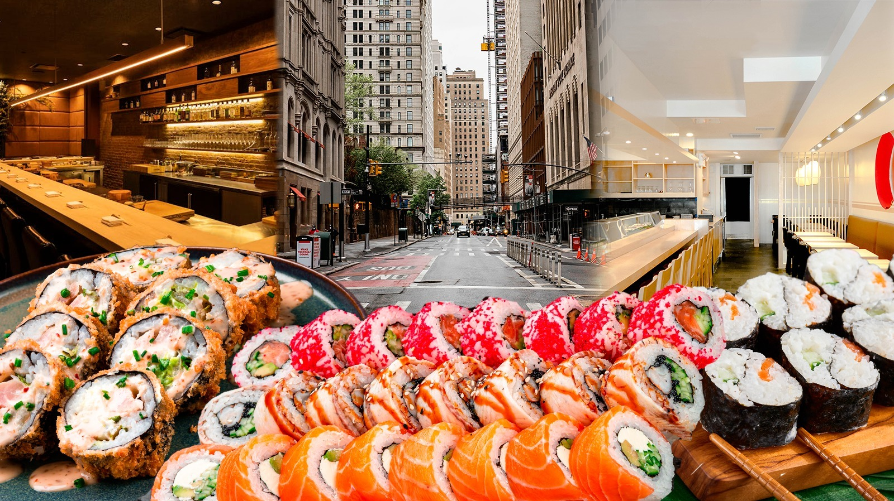
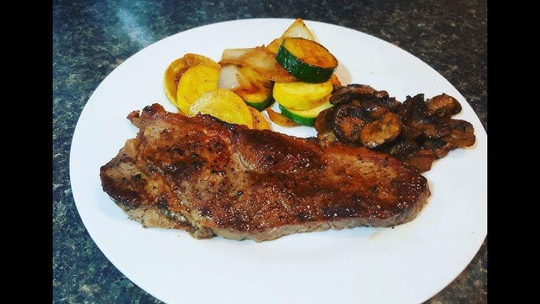
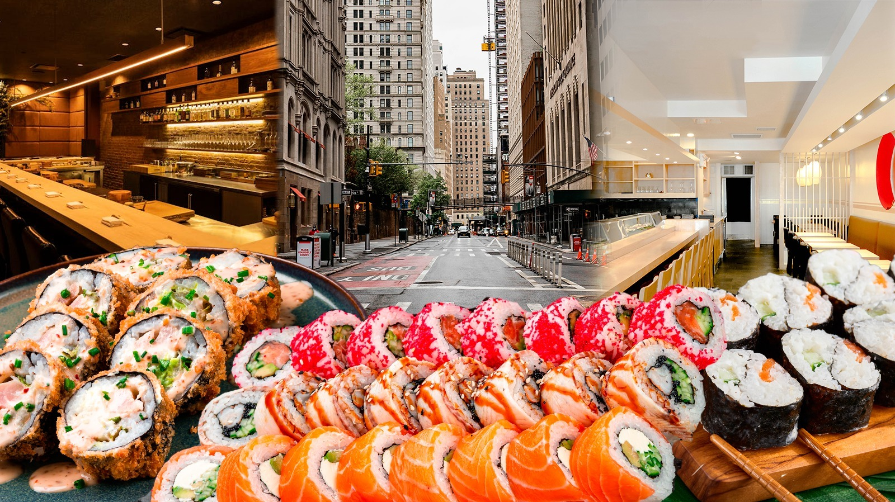
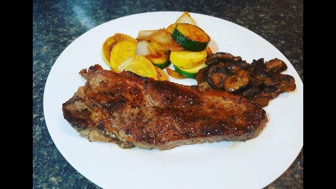
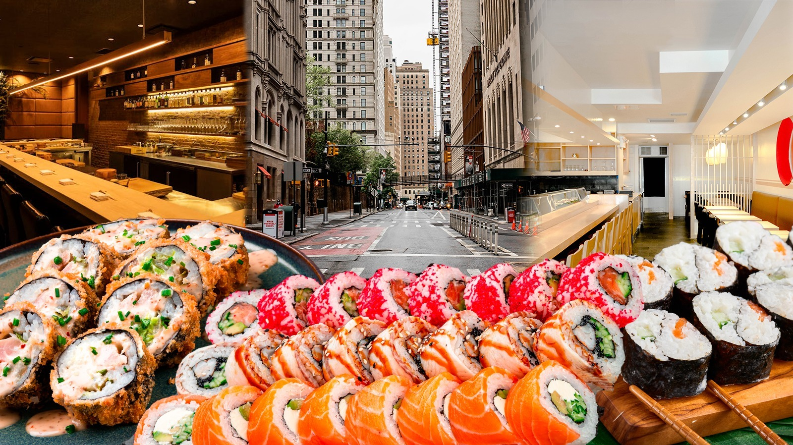
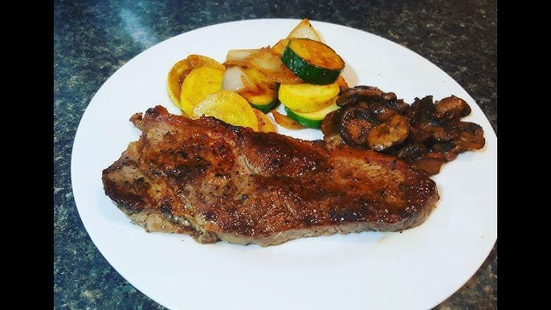

Delicious NYC Eats
 



Explore the top dining experiences in the city that never sleeps.
New York City is a melting pot of cultures, and its culinary landscape reflects this diversity. From historic delis and Michelin-starred fine dining establishments to bustling food markets and trendy cafes, NYC's restaurant scene is a dynamic mix of traditional flavors and innovative creations. With over 23,000 eateries, the city offers a gastronomic adventure that spans authentic street food, elegant dining experiences, and hidden neighborhood gems. Whether you're savoring a world-famous slice of New York-style pizza, indulging in high-end French cuisine, or discovering the next big food trend in Brooklyn, there's always something to delight your taste buds.
Some of the most famous restaurants have shaped the city's reputation as a global food capital. Iconic places like Katz's Delicatessen serve legendary pastrami sandwiches, while Le Bernardin continues to redefine seafood fine dining with its exquisite dishes. Emerging food destinations in the Lower East Side and Williamsburg are home to contemporary restaurants blending international flavors with modern techniques. NYC's vibrant food scene isn't just about food; it's an experience that blends history, innovation, and culture into every bite.
The city's food scene reflects its multicultural fabric, with vibrant neighborhoods like Chinatown, Little Italy, and Harlem serving up authentic global cuisines. Trendy eateries in the West Village, upscale steakhouses in Midtown, and innovative fusion spots in Williamsburg showcase the city's creativity and passion for food. Whether you're grabbing a quick bagel with lox, indulging in a gourmet tasting menu, or exploring food trucks, NYC's restaurants are a testament to its status as a global food capital. Dining here is not just a meal—it's an experience that captures the energy and diversity of the city itself.
Michelin-starred seafood heaven. Le Bernardin offers an elegant dining experience with world-class flavors.
📍 Midtown ManhattanNew York's most famous Jewish deli, serving its legendary pastrami sandwiches since 1888.
📍 Lower East SideFine dining at its peak. Per Se is known for its luxurious French cuisine and an unforgettable tasting menu.
📍 Columbus Circle

